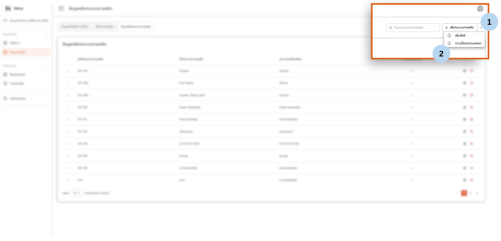
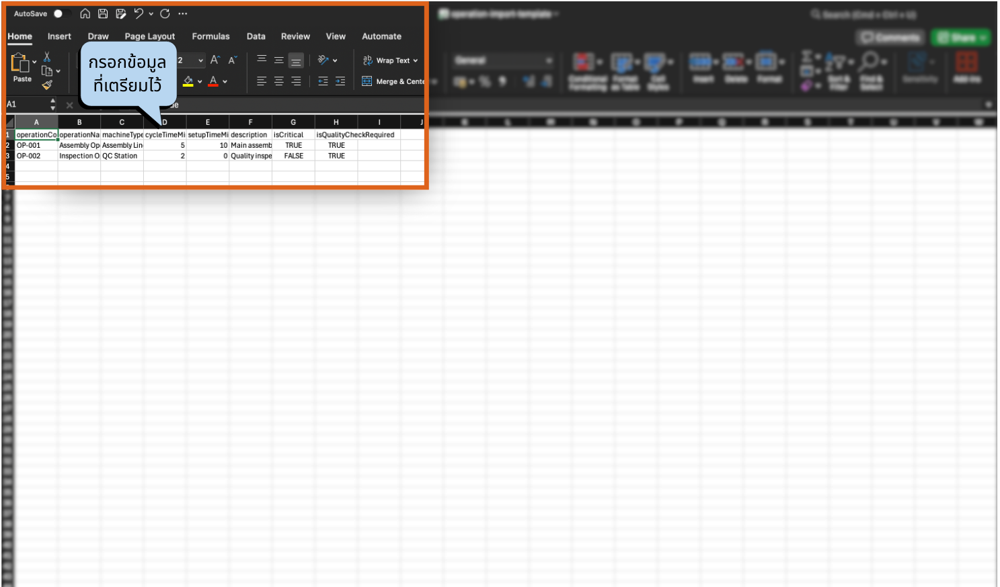
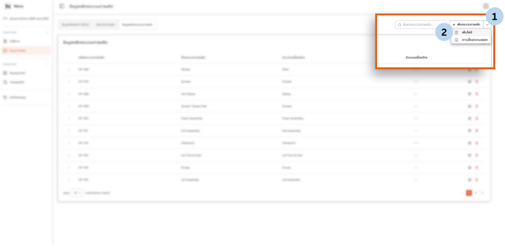

ก่อนเริ่มใช้งาน จำเป็นต้องตั้งค่าข้อมูลพื้นฐานของโรงงานให้ครบถ้วนในเมนู ข้อมูลการผลิต (Production Data) และ ข้อมูลอุปกรณ์ (Equipment Data)
คู่มือนี้จะแนะนำคุณในการตั้งค่าข้อมูลหลักที่จำเป็นทั้งหมด: Machine Data, Process Data, Production Routes, และ SKUs
📊 ภาพรวมลำดับการตั้งค่า
ทำตามลำดับนี้เพื่อตั้งค่าข้อมูลหลักของคุณอย่างถูกต้อง:
ข้อมูลหลักเครื่องจักร (Machine Data)
ข้อมูลอุปกรณ์ (Equipment Data)
ข้อมูลหลักกระบวนการผลิต (Process Data)
ข้อมูลหลักกระบวนการผลิต (Process Data)
เส้นทางการผลิต (Production Routes)
เส้นทางการผลิต (Production Routes)
ข้อมูลหลักสินค้า (SKU Data)
ข้อมูลหลักสินค้า (SKU Master Data)
ต้องทำตามลำดับนี้ตามลำดับ แต่ละขั้นตอนขึ้นอยู่กับการเสร็จสิ้นของขั้นตอนก่อนหน้า
ข้อมูลหลักเครื่องจักร (Machine Data)
กำหนดรายละเอียดของเครื่องจักรที่มีอยู่ในโรงงานของผู้ใช้งาน เพื่อนำเข้าสู่ระบบการวางแผนงาน
ไปที่เมนู ข้อมูลอุปกรณ์ (Equipment Data)
คลิก + เพิ่มเครื่อง
ระบุชื่อกระบวนการและรายละเอียดต่าง ๆ
คลิก "บันทึก" เพื่อบันทึกผล

การเพิ่มเครื่องจักรในระบบ
ข้อมูลหลักกระบวนการผลิต (Process Data)
กำหนดรายละเอียดของแต่ละขั้นตอนการผลิตเพื่อนำไปประกอบเป็น Production Routes (เช่น ตัด, ประกอบ, พ่นสี)
ไปที่เมนู ข้อมูลการผลิต (Production Data) > ข้อมูลหลักกระบวนการผลิต (Process Data)
คลิก + เพิ่มกระบวนการผลิต
ระบุชื่อกระบวนการและรายละเอียดต่าง ๆ
คลิก "เพิ่มการดำเนินงาน" เพื่อบันทึกผล

การจัดการข้อมูลหลัก ข้อมูลการผลิต
เส้นทางการผลิต (Production Routes)
กำหนดลำดับขั้นตอนการผลิตของสินค้าแต่ละชนิด ว่าต้องผ่านกระบวนการใดบ้าง
ไปที่เมนู ข้อมูลการผลิต (Production Data) > เส้นทางการผลิต (Production Routes)
คลิก + Add เพื่อสร้างเส้นทางใหม่
กำหนดลำดับขั้นตอน (Step) จากต้นจนจบกระบวนการ
- Step 1: Cutting (ตัด)
- Step 2: Assembly (ประกอบ)
- Step 3: Painting (พ่นสี)
SKUs (ข้อมูลหลักสินค้า)
Register products that your factory produces, which will be used as references when creating work orders.
ไปที่เมนู ข้อมูลการผลิต (Production Data) > ข้อมูลหลักสินค้า (SKU) (SKU Master Data)
คลิกปุ่ม + เพิ่ม SKU มุมขวาบน
กรอกรายละเอียดสินค้า (รหัสสินค้า, ชื่อสินค้า, หน่วยนับ) และกด "Next"

การจัดการข้อมูลหลัก ข้อมูลหลักสินค้า
เมื่อกด "Next" เรียบร้อย จะเข้าสู่หน้าต่อไปที่สามารถเพิ่ม ชิ้นส่วนสำหรับ SKU นั้น ๆ ได้
หากมีมากกว่า 1 ชิ้นส่วน สามารถกดเพิ่ม ปุ่มตามลูกศร เพื่อเพิ่มชิ้นส่วนได้
คลิก "Create"

การจัดการข้อมูลหลัก ข้อมูลหลักสินค้า
กรอกรายละเอียดสินค้า
กด "Next"
เข้าสู่หน้าจอตั้งค่าชิ้นส่วน
เพิ่มชิ้นส่วน
เพิ่มชิ้นส่วนสำหรับ SKU (ถ้าจำเป็น)
คลิก "Create"
เสร็จสิ้นการตั้งค่า SKU
การ Import ข้อมูลพร้อมกันปริมาณมาก (Bulk Upload)
เพื่อขจัดขั้นตอนการใส่ข้อมูลทีละ 1 หน่วย ผู้ใช้งานสามารถ ดาวน์โหลดไฟล์ CSV (เปิดด้วย Excel) ต้นแบบเพื่อนำมา กรอกข้อมูล และอัปโหลดกลับไปในภายหลังพร้อมกันทั้งหมดได้
ลำดับการอัปโหลดที่สำคัญ
อย่างไรก็ตามผู้ใช้งานจะต้องอัปโหลดข้อมูลตามลำดับดังนี้ เพื่อไม่ให้เกิดความผิดพลาดในระบบ
ขั้นตอนการ Import ข้อมูลพร้อมกันปริมาณมาก
ขั้นตอนแรก: ดาวน์โหลดไฟล์
ให้ผู้ใช้งานดาวน์โหลดไฟล์ โดยกดที่ลูกศรชี้ลงที่มุมบนขวา และคลิก "ดาวน์โหลดเทมเพลต"

การดาวน์โหลดไฟล์ CSV ต้นแบบ
ขั้นตอนต่อไป: กรอกข้อมูล
ให้ผู้ใช้งานกรอกข้อมูลในไฟล์ที่ได้ดาวน์โหลดมา

การกรอกข้อมูลเพื่อเตรียมอัปโหลด
บันทึกไฟล์ในรูปแบบที่ถูกต้อง
เมื่อต้องการบันทึกไฟล์ต้องเลือกรูปแบบไฟล์ (File Format) เป็น "CSV UTF-8 (Comma Delimited) .csv" เพื่อให้ระบบสามารถนำเข้าภาษาไทยได้อย่างถูกต้อง

การบันทึกไฟล์ในรูปแบบ CSV UTF-8 เพื่อรองรับภาษาไทย
อัปโหลดไฟล์
หลังจากนั้น จึงนำไฟล์ที่กรอกข้อมูลเรียบร้อย มาอัปโหลดเข้าโปรแกรม โดยกดที่ลูกศรชี้ลงที่มุมบนขวา และคลิก "เพิ่มไฟล์" โดยเลือกไฟล์ที่ได้ทำการกรอกข้อมูลไว้อย่างถูกต้อง

การอัปโหลดข้อมูลขึ้นโปรแกรม
To update existing data, you can edit the data in the file you previously used for upload and repeat the upload process. The system will automatically detect and update the data.